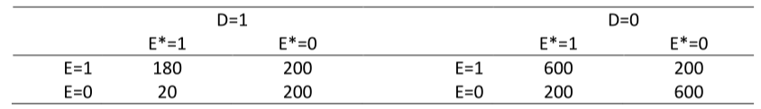

Introduction
In this practical you need to draw a DAG for each of 3 scenarios and
then decide what model to fit.
We will use the same data for each scenario. The data is given in the
table below.

First, we perform some estimation so that you know the associations
between the 3 variables \(E\), \(E^*\), and \(D\).
- Estimating the marginal odds ratio for the association between \(E\) on \(D\) (i.e., using \(D\) as the outcome/dependent variable and
\(E\) as the covariate)
dat %>%
glm(d ~ e, family = binomial, data = .) %>%
{cbind(coef(.), confint.default(.))} %>%
exp() %>%
round(., digits = 2) %>%
kbl() %>%
kable_styling(full_width = FALSE)
|
|
|
2.5 %
|
97.5 %
|
|
(Intercept)
|
0.28
|
0.24
|
0.32
|
|
e
|
1.73
|
1.42
|
2.09
|
- Estimating the conditional odds ratio for the association between
\(E\) and \(D\) adjusting for/conditioning on \(E^*\)
dat %>%
glm(d ~ e + es, family = binomial, data = .) %>%
{cbind(coef(.), confint.default(.))} %>%
exp() %>%
round(., digits = 2) %>%
kbl() %>%
kable_styling(full_width = FALSE)
|
|
|
2.5 %
|
97.5 %
|
|
(Intercept)
|
0.33
|
0.29
|
0.39
|
|
e
|
3.00
|
2.40
|
3.76
|
|
es
|
0.30
|
0.24
|
0.38
|
- Estimating the marginal odds ratio for the association between \(E^*\) and \(D\)
dat %>%
glm(d ~ es, family = binomial, data = .) %>%
{cbind(coef(.), confint.default(.))} %>%
exp() %>%
round(., digits = 2) %>%
kbl() %>%
kable_styling(full_width = FALSE)
|
|
|
2.5 %
|
97.5 %
|
|
(Intercept)
|
0.5
|
0.44
|
0.56
|
|
es
|
0.5
|
0.41
|
0.61
|
Question
You are given 3 scenarios from which the data could have been
obtained. For each scenario we wish to estimate the effect of \(E\) on \(D\).
- Draw a DAG for each scenario
- Once you have drawn your DAG check that it conforms to the
conditional independencies which were estimated above
- Use your DAG to write down model would you fit to estimate the
effect of \(E\) on \(D\) in each scenario
Scenario 1
- The data come from a case-control study
- The aetiological question of interest is whether exposure to a
particular nonsteroidal anti-inflammatory drug during the first
trimester of pregnancy causes a congenital defect (\(D\)) arising in the second trimester
- \(D=1\) for cases, \(D=0\) for controls without the defect
- The sampling fraction for controls is unknown
- \(E^*\) is use of the drug of
interest during the first trimester, as self-reported by the mother 1
month postpartum
- \(E\) is use of the drug of
interest as recorded in comprehensive, accurate medical records of 1st
trimester medications
- You can ignore including any other possible confounders or other
drug exposures
Scenario 2
- The data come from a prospective cohort study
- \(D\) is all-cause mortality in a
cohort of healthy male miners, all aged 25 years, all of whom worked
underground in a variety of different mine shafts for 6 months in
1967
- 40 year follow-up is complete. The aetiologic question is whether
pulmonary exposure to doses of radon above a certain level causes
increased mortality
- For each miner, the air level of radon in his mine was measured
(\(E^*\))
- A subject’s actual exposure depends on the level of radon in the
mine and the physical demands of the job and this was measured by lung
dosimetry (\(E\): 0 = below threshold
of interest, 1 = above)
- It is known that 6 months of physical exertion at age 25 years has
no independent effect on subsequent mortality
Scenario 3
- The data come from a randomized controlled trial
- \(D\) is death over a 15 year
period
- Study subjects were randomly assigned to an educational intervention
to encourage them to eat a low fat diet (\(E^*=1\) for intervention, \(E^*=0\) for control)
- Investigators subsequently measured diet accurately in all trial
participants (\(E=1\) for low fat diet,
\(E=0\) for non-low fat diet)
- Assume the intervention has no effect on \(D\) other than through its effect on actual
fat consumption \(E\)